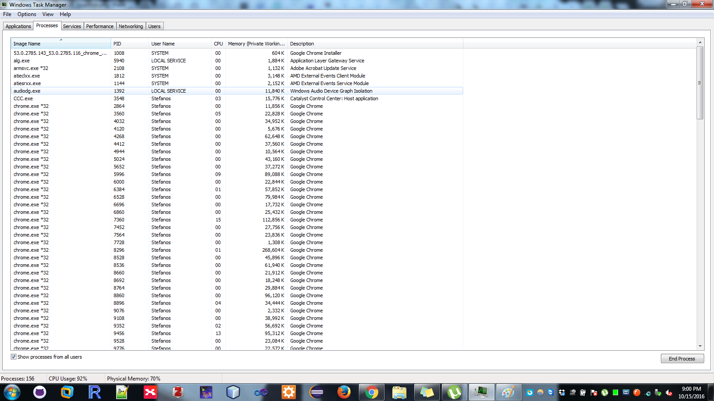
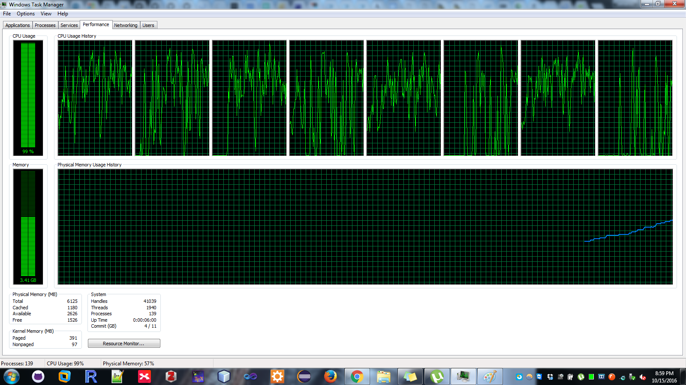
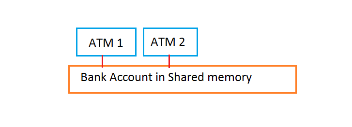

Σενάριο με Κανονική Ροή
get balance (balance = $50)
add $100
write back result (balance = $150)
get balance (balance = $150)
add $50
write back result (balance = $200) Σενάριο με πρόβλημα συγχρονισμού
get balance (balance = $50)
get balance (balance = $50)
add $100
add $50
write back result (balance = $150)
write back result (balance = $100)Σενάριο με παραλληλισμό
get balance(balance=$50) get balance(balance=$50)
add $100 add $50
write result(balance=$150) write results(balace=$50)class FindCountOfEvenNumbers extneds Thread {
private int maxNumber;
private int count;
FindCountOfEvenNumbers(int maxNumber) {
this.maxNumber = maxNumber;
this.count = 0;
}
public void run() {
for (int i=0; i<this.maxNumber; ++i)
{
if (i % 2 == 0)
++count;
}
}
}FindCountOfEvenNumbers newThread = new FindCountOfEvenNumbers(1200);
new Thread(findNumber).start();
FindCountOfEvenNumbers findNumber = new FindCountOfEvenNumbers(1200);
Thread t = new Thread(findNumber);
t.start();class FindCountOfEvenNumbers implements Runnable {
private int maxNumber;
private int count;
FindCountOfEvenNumbers(int maxNumber) {
this.maxNumber = maxNumber;
this.count = 0;
}
public void run() {
for (int i=0; i<this.maxNumber; ++i)
{
if (i % 2 == 0)
++count;
}
}
}//Implementing Runnable Interface
class ImplementsRunnable implements Runnable {
private int counter = 0;
public void run() {
counter++;
System.out.println("ImplementsRunnable : Counter : "+ counter);
}
}
//Extending Thread class
class ExtendsThread extends Thread {
private int counter = 0;
public void run () {
counter++;
System.out.println("ExtendsThread : Counter : "+ counter);
}
}public class ThreadVsRunnable {
public static void main(String args[]) throws Exception {
// Multiple threads share the same object.
ImplementsRunnable rc = new ImplementsRunnable();
Thread t1 = new Thread(rc);
t1.start();
Thread.sleep(1000);
Thread t2 = new Thread(rc);
t2.start();
Thread.sleep(1000);
Thread t3 = new Thread(rc);
t3.start();
ExtendsThread tc1 = new ExtendsThread();
tc1.start();
Thread.sleep(1000);
ExtendsThread tc2 = new ExtendsThread();
tc2.start();
Thread.sleep(1000);
ExtendsThread tc3 = new ExtendsThread();
tc3.start();
}
} ImplementsRunnable : Counter : 1
ImplementsRunnable : Counter : 2
ImplementsRunnable : Counter : 3
ExtendsThread : Counter : 1
ExtendsThread : Counter : 1
ExtendsThread : Counter : 1 Thread t = new Thread(findNumber);
t.start();
System.out.println("Now thread " + t.getName() + " is running");
t.join();public class SimpleThreads {
static void threadMessage(String message) {
String threadName = Thread.currentThread().getName();
System.out.format("%s: %s%n",threadName, message);
}
private static class MessageLoop implements Runnable {
public void run() {
String importantInfo[] = {"Mares eat oats","Does eat oats","Little lambs eat ivy","A kid will eat ivy too"};
try {
for (int i = 0; i < importantInfo.length; i++) {
Thread.sleep(4000);
threadMessage(importantInfo[i]);
}
} catch (InterruptedException e) {threadMessage("I wasn't done!");
}
}
}
public static void main(String args[])throws InterruptedException {
long patience = 1000 * 60 * 60;
// If command line argument
// present, gives patience
// in seconds.
if (args.length > 0) {
try {
patience = Long.parseLong(args[0]) * 1000;
} catch (NumberFormatException e) {
System.err.println("Argument must be an integer.");
System.exit(1);
}
}
threadMessage("Starting MessageLoop thread");
long startTime = System.currentTimeMillis();
Thread t = new Thread(new MessageLoop());
t.start();
threadMessage("Waiting for MessageLoop thread to finish");
while (t.isAlive()) {
threadMessage("Still waiting...");
t.join(1000);
if (((System.currentTimeMillis() - startTime) > patience)&& t.isAlive()) {
threadMessage("Tired of waiting!");
t.interrupt();
t.join();
}
}
threadMessage("Finally!");
}
}